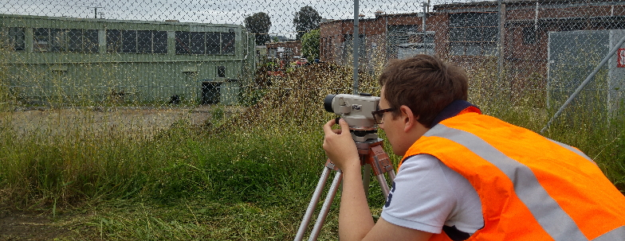
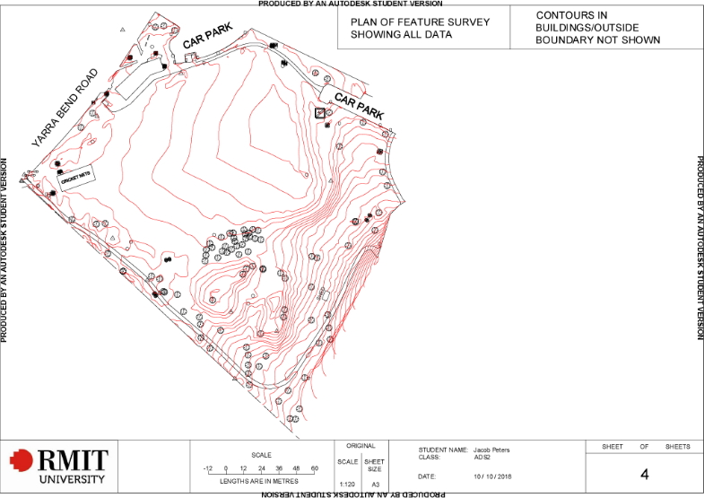
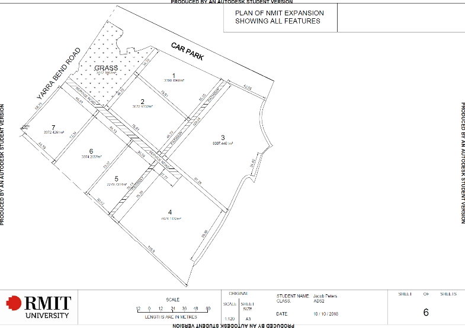

Skilled in various software, equipment, and methods
During my studies in the Diploma, Advanced Diploma, Bachelor, and real world
experience, i've come to learn and acquire proficiency in the usage of varying
survey software such as:
In addition, I have also acquired a deep understanding in the operations, usage,
maintenance, effective usage, capabilities, and limitations of the following equipment:
Fieldwork conducted at university and experience in the industry has taught me how to safely,
efficiently, and accurately work on a wide range of survey projects, all to varying levels of
accuracy. I am capable conducting the following surveys to sub 1mm accuracy:


Fictional expension of Melbourne Polytechnic into Fairfield Park
During the Advanced Diploma of Surveying, we were required to conduct a
major project, where the (fictional) client, budget, location, scope of
survey, deliverables, level of quality, equipment.
I chose to conduct a survey of Fairfield Park, for a fictional expansion
of Melbourne Polytechnic. Along with an assistant, a two-day feature survey
was conducted where nine different plans were created.
The above plans are two of the nine resulting deliverables. The first plan
shows all the data captured by the total station, and the second showing
the planned expansion.